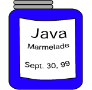

erstellt: 30.09.99; überarbeitet: 07.03.00; übersetzt: 15.06.03; überarbeitet 03.02.04, 10.02.04, 26.07.04, 18.01.05, 11.07.06, 19.10.06, 19.01.11; Deutsche Übersetzung Heinrich Gailer
In dieser Aufgabe werden Sie das Entwerfen von Objekten aus anderen Objekten üben.
Zuerst werden Sie die Klasse Marmelade definieren.
Objekte dieser Klasse repräsentieren Gläser von eingemachten Früchten.
Dann werden einige dieser Gläser in eine Vorratskammer gestellt.

1.
Entwurf der Klasse Marmelade.
Objekte dieser Klasse werden ein Glas von eingemachten Früchten repräsentieren,
so wie sie Ihre Großmutter in jedem Herbst gemacht hat.
Überlegen Sie sich drei Werte, die Sie über ein Marmeladenglas wissen möchten.
Denken Sie jetzt an ein paar Methoden, die auf ein Marmelade-Objekt angewendet werden können.
Es ist fast immer eine gute Idee eine Möglichkeit zu haben die Daten eines Objekts auszugeben:
Das ist ein etwas dummes Beispiel und es wäre nicht ungewöhnlich, wenn Sie an etwas anderes gedacht haben, um die Lücken auszufüllen.
2. Klasse dokumentieren. Füllen Sie jetzt die Lücken für die Klassendefinition aus:
3. Das Design überprüfen. Um das Design zu überprüfen, schreiben Sie ein kleines Programm, das die Klasse verwendet. Natürlich kann das Programm nicht kompiliert werden bis die Klasse geschrieben ist, aber Sie können dadurch ein Gefühl dafür bekommen ob das Klassendesign vernünftig ist.
Sie könnten einige Zweifel haben ob dies ein vernünftiges Programm ist.
Vielleicht wäre es eine gute Idee die auftragen() Methode eine Mitteilung aus geben zu lassen, jedes Mal wenn sie verwendet wird.
4. Füllen Sie die Instanzvariablen aus. Füllen Sie den Datentyp für jede Instanzvariable aus.
5. Vervollständigen Sie den Konstruktor. Der Konstruktor wird die Instanzvariablen des zu konstruierenden Objekts initialisieren.
6. Vervollständigen Sie die Methoden. Wenn der Anwender mehr Marmelade auftragen möchte als verfügbar ist, tragen Sie nur die Menge auf, die im Glas übrig ist.
7. Design der Klasse Vorratskammer.
Sagen wir, dass eine Vorratskammer aus drei Marmeladengläsern beliebigen Typs und beliebiger Größe besteht.
Um ein Glas Marmelade zu verwenden, muss man erst zur Vorratskammer gehen und eines auswählen.
8. Instanzvariablen und Konstruktor. Entscheiden Sie über die Instanzvariablen. Es wird eine Variable geben, die auf das gegenwärtig ausgewählte Marmeladenglas verweist. Wenn kein Glas ausgewählt ist, sollte sie auf kein Objekt verweisen. Außenstehende sollten nicht in der Lage sein die Variablen direkt zu ändern.
9. Implementieren Sie die ausgeben() Methode.
Die ausgeben() Methode wird jedes der Gläser in der Vorratskammer ausgeben.
10. Implementieren Sie die auswaehlen() und auftragen() Methoden.
Vollständiges Programm mit einer Testklasse: Sie möchten vielleicht dieses Programm nach NotePad kopieren, es als Datei speichern und es ausprobieren.
class Marmelade
{
// Instanzvariablen
private String inhalt; // Art der Frucht im Glas
private String datum; // Datum des Abfüllens
private int menge; // Menge der Marmelade im Glas
// Konstruktor
public Marmelade( String inhalt, String datum, int menge )
{
this . inhalt = inhalt;
this . datum = datum;
this . menge = menge;
}
// Methoden
public boolean istLeer()
{
return ( menge == 0 );
}
public void ausgeben()
{
System.out.println ( inhalt + " " + datum + " " + menge + " Unzen." );
}
public void auftragen ( int unzen)
{
if ( !istLeer() )
{
if ( unzen <= menge )
{
System.out.println("Auftragen von " + unzen + " Unzen "
+ inhalt );
menge = menge - unzen;
}
else
{
System.out.println("Auftragen von " + menge + " Unzen "
+ inhalt );
menge = 0;
}
}
else
System.out.println("Keine Marmelade im Glas!");
}
}
class Vorratskammer
{
// Instanzvariablen
private Marmelade glas1;
private Marmelade glas2;
private Marmelade glas3;
private Marmelade glasAusgewaehlt;
// Konstruktor
public Vorratskammer( Marmelade glas1, Marmelade glas2, Marmelade glas3 )
{
this . glas1 = glas1;
this . glas2 = glas2;
this . glas3 = glas3;
glasAusgewaehlt = null;
}
// Methoden
public void ausgeben()
{
System.out.print("1: "); glas1 . ausgeben();
System.out.print("2: "); glas2 . ausgeben();
System.out.print("3: "); glas3 . ausgeben();
}
// wir setzen voraus, dass der Anwender eine richtige Auswahl trifft, 1, 2, oder 3
public void auswaehlen( int glasNummer )
{
if ( glasNummer == 1 )
glasAusgewaehlt = glas1;
else if ( glasNummer == 2 )
glasAusgewaehlt = glas2;
else
glasAusgewaehlt = glas3;
}
// Auftragen der ausgewählten Marmelade
public void auftragen( int unzen )
{
glasAusgewaehlt . auftragen( unzen );
}
}
class VorratskammerTester
{
public static void main ( String[] args )
{
Marmelade stachelbeer = new Marmelade( "Stachelbeer", "04.07.09", 12 );
Marmelade erdbeer = new Marmelade( "Erdbeer", "30.09.10", 8 );
Marmelade aprikosen = new Marmelade( "Aprikosen", "31.10.10", 3 );
Vorratskammer vorrat = new Vorratskammer( stachelbeer, erdbeer, aprikosen );
vorrat.ausgeben();
vorrat.auswaehlen(1);
vorrat.auftragen(2);
vorrat.ausgeben();
vorrat.auswaehlen(3);
vorrat.auftragen(4);
vorrat.ausgeben();
}
}
Wenn Sie das Programm starten, werden Sie mit der Ausgabe belohnt:
1: Stachelbeer 04.07.09 12 Unzen. 2: Erdbeer 30.09.10 8 Unzen. 3: Aprikosen 31.10.10 3 Unzen. Auftragen von 2 Unzen Stachelbeer 1: Stachelbeer 04.07.09 10 Unzen. 2: Erdbeer 30.09.10 8 Unzen. 3: Aprikosen 31.10.10 3 Unzen. Auftragen von 3 Unzen Aprikosen 1: Stachelbeer 04.07.09 10 Unzen. 2: Erdbeer 30.09.10 8 Unzen. 3: Aprikosen 31.10.10 0 Unzen.
Ende der Übung. Wenn Sie sie wiederholen möchten, klicken Sie in Ihrem Browser auf "Aktualisieren".
Zurück zum Inhaltsverzeichnis.